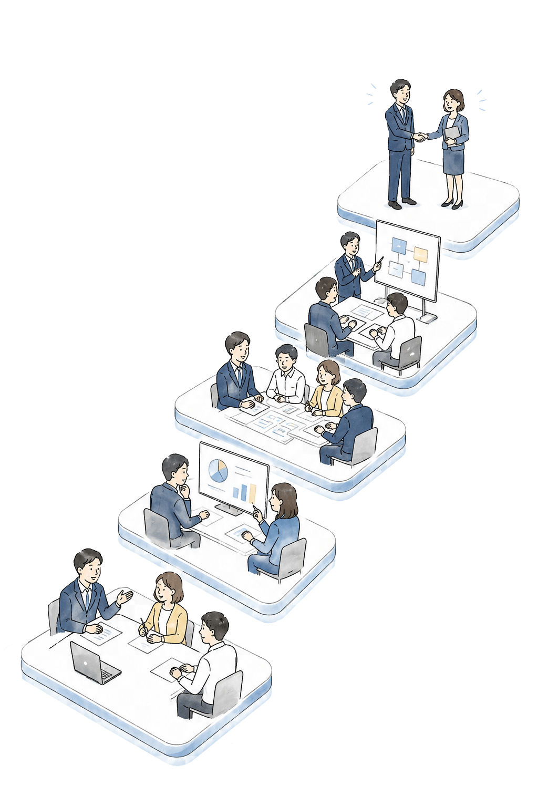
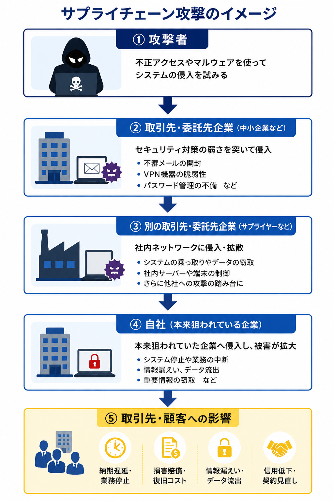
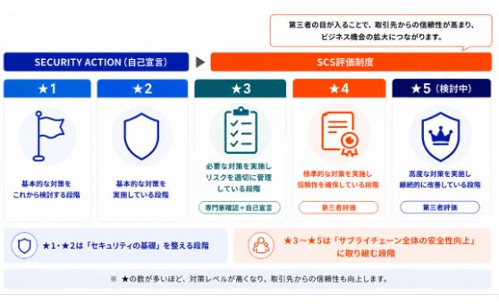

01
・取引先から急に対応を求められたら不安
制度開始に伴い、取引先から「★3・★4取得」を求められる可能性がある

★3・★4 取得をサポート
サプライチェーン全体で求められる
SCS評価制度の背景と対応のポイント
近年、サイバー攻撃は大企業だけでなく、中小企業や委託先企業も標的になっています。
特に増えているのが、セキュリティ対策が比較的弱い取引先や委託先を経由して、
本来狙われている企業へ侵入する「サプライチェーン攻撃」です。
企業規模に関係なく、
・不審メールの開封
・VPN機器の脆弱性
・パスワード管理の不備
などをきっかけに被害が発生しています。

自社だけでなく、取引先にも影響が及ぶため、
サプライチェーン全体でのセキュリティ対策が重要視されています。
こうした背景を受けて、経済産業省は
「サプライチェーン強化に向けたセキュリティ対策評価制度（SCS評価制度）」
の創設を進めています。
SCS評価制度は、企業のセキュリティ対策状況を共通の基準で評価し、
取引先が安心して取引できる環境づくりを目的とした制度です。
自社だけではなく、以下を含めたサプライチェーン全体のセキュリティレベル向上を目指しています。
企業のセキュリティ対策レベルは、★（星）で評価されます。
SCS評価制度は、SECURITY
ACTION（★1・★2）に続く位置づけとして、
★3からスタートする制度となっています。

制度開始後に想定されるケース
という企業も少なくありません。
制度開始に伴い、取引先から「★3・★4取得」を求められる可能性がある
新しい制度のため情報も少なく、「まず何をすべきか」「どこまで対応すればよいか」が分かりづらい
ISMS・Pマークなど、既存の認証・取り組みと何が違うのか分からない。
「また一から対応が必要？」「今の運用は活かせないの？」と不安を感じている。
制度対応では、「何を整備するべきか」「どこまで対応すればよいか」を判断することが重要です。
あわいコンサルティングでは、無理なく取り組める現実的なセキュリティ対策をご提案し、制度対応をサポートします。
現在のセキュリティ対策状況をもとに、SCS評価制度「★3・★4の要求事項・評価基準」とのギャップを可視化します。
「何ができていて、何が不足しているのか」を整理することで、現状を把握していきます。
分析の結果をもとに、★3・★4対応に向けた必要な対策を整理します。
企業ごとの環境や既存の取り組みを踏まえながら、不足している項目・優先順位を明確化し、
「何を、どこから、どう始めるべきか」が分かる現実的な対応策をご提案します。
必要に応じて規程・手順書の作成・記録類の整備を支援します。
運用しやすさを重視し、「作って終わり」ではなく、実際に使える仕組みづくりを行います。
お客様には定めたルールの運用をお願いいたしします。
定めたルールにおける運用結果を自己評価に落とし込みます。
★3の場合は、制度側が指定したセキュリティ専門家へのレビュー依頼が必要です。
★4の場合は、制度側が指定した第三者評価機関による現地審査が行われます。
★3・★4ともに、全ての評価基準への適合が求められるため、評価結果が不適合だった場合、是正案の提示・報告書の整備を行います。
ギャップ分析表を購入いただきステップ１の作業を自社で行う場合を想定しております
ステップ１のギャップ分析対応を行います
ステップ１、２の対応を行います
ステップ１～４までの対応を行います
近年は、取引継続や新規取引においても、一定水準のセキュリティ対策を求める動きが広がっています。
制度開始後に慌てて対応するのではなく、“求められる前に備える”ことが、今後の信頼性向上やビジネス機会につながります。
「何から始めればいいかわからない」という段階からでも大丈夫。
まずは現状整理から、一緒に進めていきます
3000社以上の支援実績から培ったノウハウをもとに、業種・規模に応じた最適な制度対応をご提案します。
Pマーク・ISMSなど、情報セキュリティ認証支援において取得・更新率100%を継続。
万一、弊社起因で認証取得に至らなかった場合は、全額返金いたします。
既存のセキュリティ運用を活かしながら、無駄や重複のない制度対応を支援します。
代行から伴走まで、専任担当を中心とした複数名体制で、
企業ごとの状況に応じた最適な進め方をご提案します。